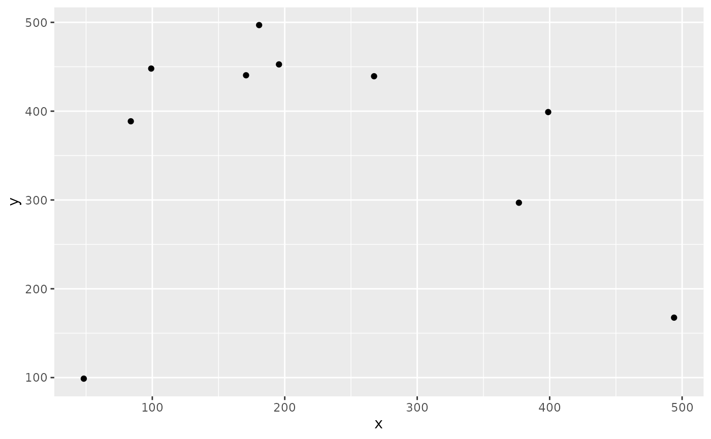
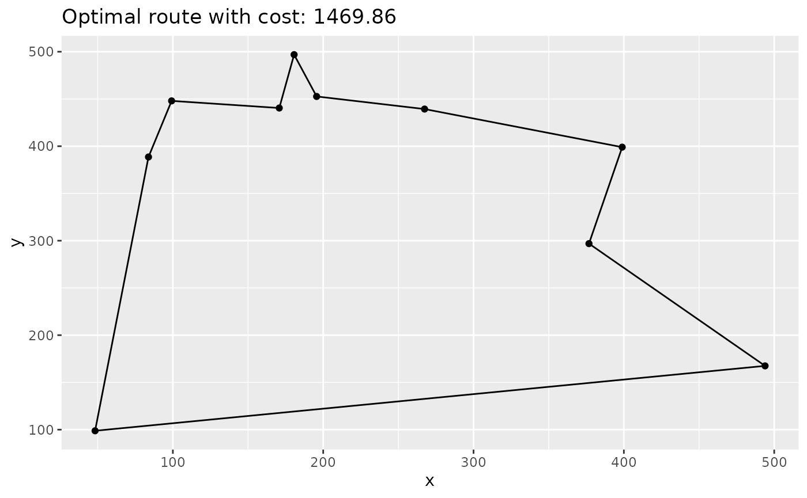

The Traveling Salesman Problem
Dirk Schumacher
2017-12-01
Source:vignettes/milp-problem-tsp.Rmd
milp-problem-tsp.RmdIntroduction
This vignette decribes how to solve a TSP using ompr.
Wikipedia gives the following definition:
The travelling salesman problem (TSP) asks the following question: Given a list of cities and the distances between each pair of cities, what is the shortest possible route that visits each city exactly once and returns to the origin city?
Also that Wikipedia article is a good starting point if you want to know more about the topic.
With the basic definition you have a set of verticies (cities) and a set of edges (connection between cities). Each edge has an associated distance \(d > 0\). That distance could be travel time, distance in km or the monetary cost associated with traveling from one city to another. Restrictions on the distances lead to special cases of the problem. For example the metric-TSP requires that the triangle inequality holds for all triples of edges.
In this vignette we will construct a TSP with random points within an Euclidean space.
Setting
First let us import some librarys
The number of cities:
n <- 10Boundary of our Euclidean space:
# from 0 to ...
max_x <- 500
max_y <- 500Some random cities:
set.seed(123456)
cities <- data.frame(id = 1:n, x = runif(n, max = max_x), y = runif(n, max = max_y))
ggplot(cities, aes(x, y)) +
geom_point()
Now the distance matrix
Model formulation
There are essential two prominent ways to model a TSP as a MILP. One is to formulate the full model using the Miller–Tucker–Zemlin (MTZ) formulation and the other option is to use the so-called sub-tour elimination constraints .1
The first formulation is fairly compact (quadratic many constraints and variables) but is not suitable anymore when n gets larger. The second formulation has exponential many constraints at most, but can solve larger TSPs due to the better LP relaxation. The idea of the latter approach is add constraints to the model during the solution process as soon as a solution was found that contains a sub-tour. For solution strategies like this solvers usually offer callbacks that let’s you modify the model during the the branch-and-cut process - this is however not currently supported by ompr.
Therefor we will use the MTZ formulation and solve a fairly small TSP.
Import ompr.
model <- MILPModel() %>%
# we create a variable that is 1 iff we travel from city i to j
add_variable(x[i, j], i = 1:n, j = 1:n,
type = "integer", lb = 0, ub = 1) %>%
# a helper variable for the MTZ formulation of the tsp
add_variable(u[i], i = 1:n, lb = 1, ub = n) %>%
# minimize travel distance
set_objective(sum_expr(colwise(dist_fun(i, j)) * x[i, j], i = 1:n, j = 1:n), "min") %>%
# you cannot go to the same city
set_bounds(x[i, i], ub = 0, i = 1:n) %>%
# leave each city
add_constraint(sum_expr(x[i, j], j = 1:n) == 1, i = 1:n) %>%
#
# visit each city
add_constraint(sum_expr(x[i, j], i = 1:n) == 1, j = 1:n) %>%
# ensure no subtours (arc constraints)
add_constraint(u[i] >= 2, i = 2:n) %>%
add_constraint(u[i] - u[j] + 1 <= (n - 1) * (1 - x[i, j]), i = 2:n, j = 2:n)
model## Mixed integer linear optimization problem
## Variables:
## Continuous: 10
## Integer: 100
## Binary: 0
## Model sense: minimize
## Constraints: 110Results
This model can now be solved by one of the many solver libraries. Here we will use GLPK.
result <- solve_model(model, with_ROI(solver = "glpk", verbose = TRUE))## <SOLVER MSG> ----
## GLPK Simplex Optimizer, v4.65
## 110 rows, 110 columns, 434 non-zeros
## 0: obj = 0.000000000e+00 inf = 2.900e+01 (29)
## 33: obj = 2.118421165e+03 inf = 5.551e-17 (0)
## * 62: obj = 1.450925576e+03 inf = 3.997e-15 (0)
## OPTIMAL LP SOLUTION FOUND
## GLPK Integer Optimizer, v4.65
## 110 rows, 110 columns, 434 non-zeros
## 100 integer variables, 90 of which are binary
## Integer optimization begins...
## Long-step dual simplex will be used
## + 62: mip = not found yet >= -inf (1; 0)
## + 81: >>>>> 1.471334313e+03 >= 1.450925576e+03 1.4% (4; 0)
## + 104: >>>>> 1.469860058e+03 >= 1.450925576e+03 1.3% (3; 1)
## + 120: mip = 1.469860058e+03 >= tree is empty 0.0% (0; 7)
## INTEGER OPTIMAL SOLUTION FOUND
## <!SOLVER MSG> ----To extract the solution we can use get_solution method that will return a data.frame which we can further be used with tidyverse packages.
solution <- get_solution(result, x[i, j]) %>%
filter(value > 0)
kable(head(solution, 3))| variable | i | j | value |
|---|---|---|---|
| x | 7 | 1 | 1 |
| x | 1 | 2 | 1 |
| x | 5 | 3 | 1 |
Now we need to link back the indexes in our model with the actual cities.
paths <- select(solution, i, j) %>%
rename(from = i, to = j) %>%
mutate(trip_id = row_number()) %>%
tidyr::gather(property, idx_val, from:to) %>%
mutate(idx_val = as.integer(idx_val)) %>%
inner_join(cities, by = c("idx_val" = "id"))
kable(head(arrange(paths, trip_id), 4))| trip_id | property | idx_val | x | y |
|---|---|---|---|---|
| 1 | from | 7 | 267.4290 | 439.3217 |
| 1 | to | 1 | 398.8922 | 398.9946 |
| 2 | from | 1 | 398.8922 | 398.9946 |
| 2 | to | 2 | 376.7825 | 296.8970 |
And plot it:
ggplot(cities, aes(x, y)) +
geom_point() +
geom_line(data = paths, aes(group = trip_id)) +
ggtitle(paste0("Optimal route with cost: ", round(objective_value(result), 2)))
Feedback
Do you have any questions, ideas, comments? Or did you find a mistake? Let’s discuss on Github.